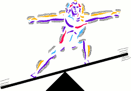

Entropía
La entropía mide el desorden o la incertidumbre en un sistema. Representa la sorpresa en un mensaje, la tendencia de un sistema a volverse más caótico con el tiempo.

Homeostasis
La homeostasis es el proceso mediante el cual los sistemas mantienen un equilibrio interno constante para asegurar un funcionamiento óptimo.
Factibilidad
La factibilidad de un proyecto se refiere a la viabilidad y posibilidad de llevar a cabo con éxito una iniciativa planificada.
Credito
El crédito de capital necesario para un proyecto se refiere a la cantidad de financiamiento que se requiere para llevar a cabo una iniciativa específica.